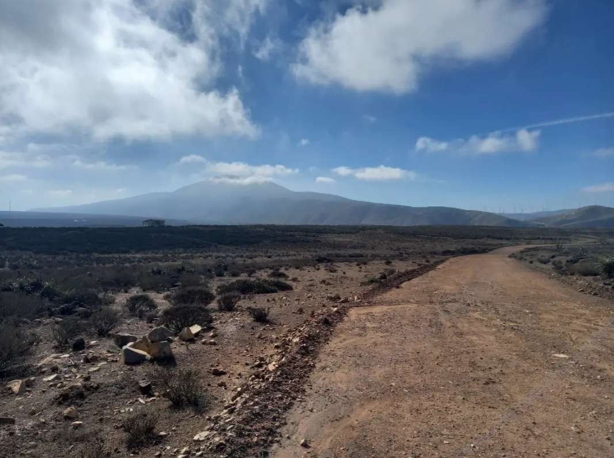
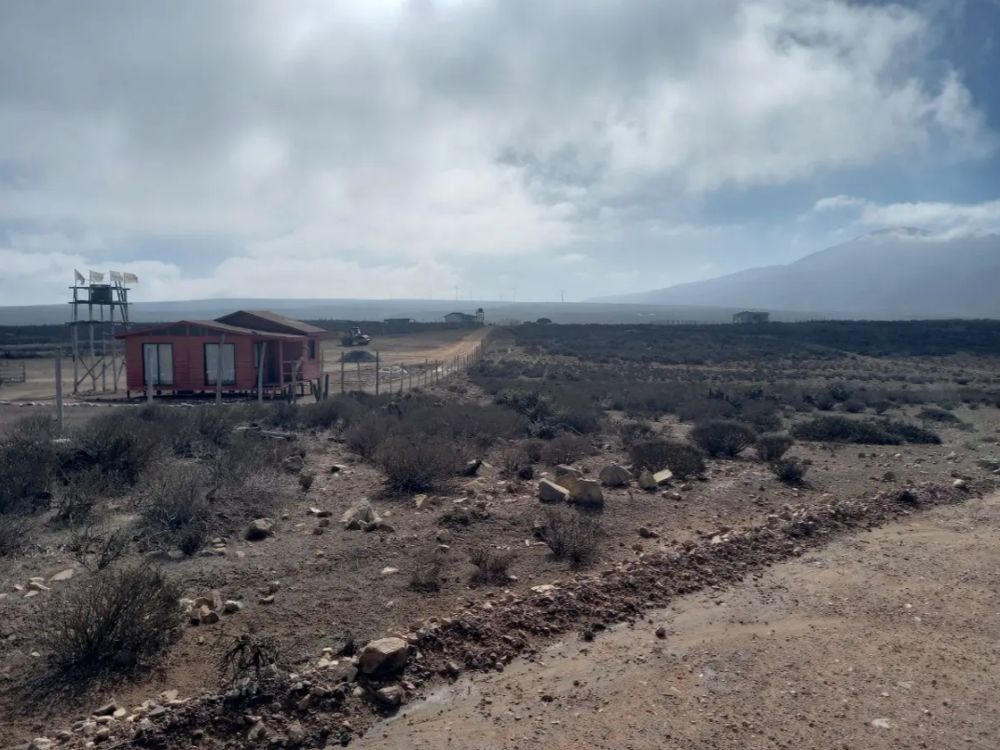
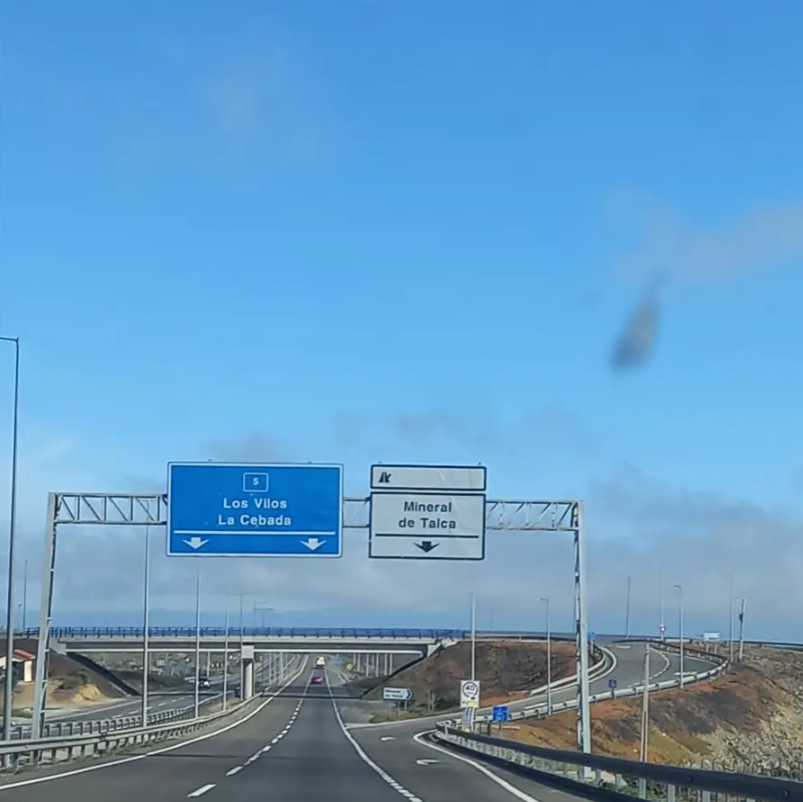

Descripción
Parcela de 5.000 m² en Mineral de Talca, Ovalle. Terreno plano con buen acceso y rol propio, ideal para proyecto rural o inversión.
Ubicación
Dirección: Cam. Mineral de Talca, Ovalle, Coquimbo, Chile.